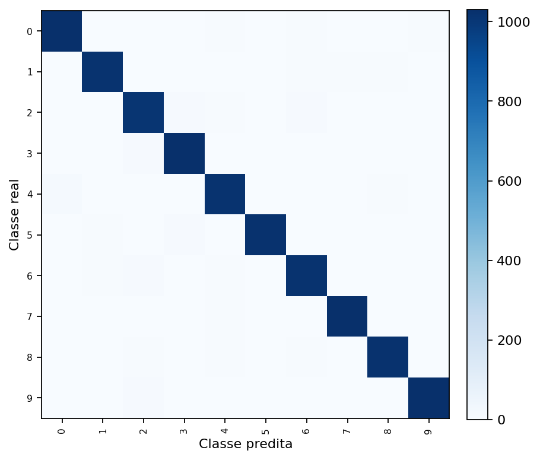
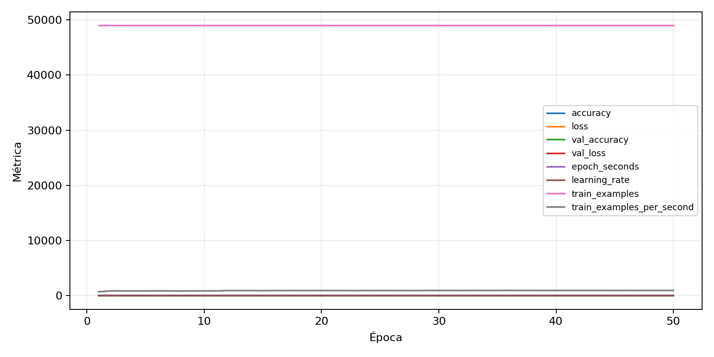

| n_samples | 10500 |
|---|---|
| loss | 0.13235752284526825 |
| accuracy | 0.9735238095238096 |
| balanced_accuracy | 0.9735238095238096 |
| macro_f1 | 0.9735364842790986 |


| Índice | Classe | Suporte | Precisão | Recall | F1 |
|---|---|---|---|---|---|
| 0 | 0 | 1050 | 0.979047619047619 | 0.979047619047619 | 0.979047619047619 |
| 1 | 1 | 1050 | 0.9760306807286673 | 0.9695238095238096 | 0.9727663640707119 |
| 2 | 2 | 1050 | 0.9555345316934721 | 0.9619047619047619 | 0.9587090650213573 |
| 3 | 3 | 1050 | 0.9725897920604915 | 0.98 | 0.9762808349146109 |
| 4 | 4 | 1050 | 0.9631031220435194 | 0.9695238095238096 | 0.9663028001898434 |
| 5 | 5 | 1050 | 0.9874396135265701 | 0.9733333333333334 | 0.9803357314148682 |
| 6 | 6 | 1050 | 0.9649289099526066 | 0.9695238095238096 | 0.9672209026128267 |
| 7 | 7 | 1050 | 0.9781783681214421 | 0.981904761904762 | 0.9800380228136882 |
| 8 | 8 | 1050 | 0.9770334928229665 | 0.9723809523809523 | 0.9747016706443914 |
| 9 | 9 | 1050 | 0.9818355640535373 | 0.9780952380952381 | 0.9799618320610688 |
{"adapter":"kmnist","balance_mode":"all_raw","class_names":["0","1","2","3","4","5","6","7","8","9"],"dataset":"kmnist","dataset_options":{},"dataset_root":"/home/msduda/datasets-tcc/kmnist","native_channels":1,"normalization":"unit_interval","num_classes":10,"protocol":{"checkpoint_monitor":"val_macro_f1","dtype_policy":"mixed_float16","early_stopping":{"patience":50,"restore_best_weights":true},"evaluation_augmentation":false,"input_channels":"native","optimizer":"Adam","pretrained_weights":false,"reduce_lr_on_plateau":{"factor":0.3,"min_lr":1e-07,"patience":50},"resize":"proportional_padding","test_time_augmentation":false,"training_from_scratch":true},"seed":42,"source_fingerprint":"8928d478d8d23938a73b4f4a92c407bf3d74beff1e0e67e3644d6ecdc30cf828","source_manifest":{"class_names":["0","1","2","3","4","5","6","7","8","9"],"joined_samples":70000,"metadata":{"layout":"kmnist-component-npz"},"name":"kmnist","native_channels":1,"source_path":"/home/msduda/datasets-tcc/kmnist","splits":{"test":10000,"train":60000},"target_size":64},"target_size":64,"test_fraction":0.15,"train_fraction":0.7,"training":{"augmentation":{"brightness_delta":0.0,"contrast_lower":1.0,"contrast_upper":1.0,"cutout_max_frac":0.0,"cutout_prob":0.0,"flip_lr":false,"noise_std":0.0,"translate_frac":0.0,"zoom_max":1.0,"zoom_min":1.0},"batch_size":336,"default_image_size":64,"dtype_policy":"mixed_float16","early_stopping_patience":50,"extra_fraction":0.0,"image_size_overrides":{"gtsrb":128},"keras_verbose":1,"learning_rate":0.0003,"max_epochs":50,"preprocess_cache_max_mib":0,"reduce_lr_factor":0.3,"reduce_lr_min_lr":1e-07,"reduce_lr_patience":50,"shuffle_buffer_max_mib":0},"validation_fraction":0.15}
{"epochs_completed":50,"epochs_recorded":50,"evaluation_seconds":20.813712606999616,"fit_seconds_current_attempt":3217.1453413189993,"max_epoch_seconds":69.93847592399834,"max_epochs":50,"mean_epoch_seconds":53.777273553239795,"mean_train_examples_per_second":913.6085231135032,"median_train_examples_per_second":926.6008471333671,"min_epoch_seconds":51.498475309999776,"selected_checkpoint":"/mnt/e/tcc-benchmark/outputs/kmnist-alldata-noaug-batch-sweep-2026-08-06/batch-336/kmnist/runs/kmnist__unit_interval__all_raw__seed-42/checkpoints/best.keras","total_seconds":2688.8636776619896,"training_seconds":2688.8636776619896,"wall_seconds_current_attempt":3242.1462727209982}
{"elapsed_seconds":3242.2092581370016,"event_counts":{"data_preparation_end":1,"data_preparation_start":1,"epoch_end":50,"evaluation_end":1,"evaluation_start":1,"fit_end":1,"fit_start":1,"periodic":639,"run_completed":1,"train_start":1},"generated_at":"2026-08-08T01:00:40.052+00:00","gpu_backend":"pynvml","interval_seconds":5.0,"metrics":{"cpu_percent":{"count":697,"max":17.0,"mean":12.997704447632712,"min":0.0,"p50":13.3,"p95":16.2},"disk_data_free_bytes":{"count":697,"max":998271139840.0,"mean":998271078552.792,"min":998271070208.0,"p50":998271078400.0,"p95":998271078400.0},"disk_data_percent":{"count":697,"max":2.7,"mean":2.7,"min":2.7,"p50":2.7,"p95":2.7},"disk_data_total_bytes":{"count":697,"max":1081101176832.0,"mean":1081101176832.0,"min":1081101176832.0,"p50":1081101176832.0,"p95":1081101176832.0},"disk_data_used_bytes":{"count":697,"max":27837751296.0,"mean":27837742951.208035,"min":27837681664.0,"p50":27837743104.0,"p95":27837743104.0},"disk_output_free_bytes":{"count":697,"max":207175905280.0,"mean":207162990239.40317,"min":207162019840.0,"p50":207162884096.0,"p95":207163138048.0},"disk_output_percent":{"count":697,"max":79.3,"mean":79.3,"min":79.3,"p50":79.3,"p95":79.3},"disk_output_total_bytes":{"count":697,"max":1000186310656.0,"mean":1000186310656.0,"min":1000186310656.0,"p50":1000186310656.0,"p95":1000186310656.0},"disk_output_used_bytes":{"count":697,"max":793024290816.0,"mean":793023320416.5968,"min":793010405376.0,"p50":793023426560.0,"p95":793024204800.0},"elapsed_seconds":{"count":697,"max":3242.138352,"mean":1626.9086532941178,"min":0.029351,"p50":1628.146127,"p95":3096.241543},"gpu_count":{"count":697,"max":1.0,"mean":1.0,"min":1.0,"p50":1.0,"p95":1.0},"gpu_memory_percent":{"count":697,"max":52.54826545715332,"mean":47.35918147663133,"min":44.32191848754883,"p50":46.12174034118652,"p95":52.341508865356445},"gpu_memory_total_bytes":{"count":697,"max":8589934592.0,"mean":8589934592.0,"min":8589934592.0,"p50":8589934592.0,"p95":8589934592.0},"gpu_memory_used_bytes":{"count":697,"max":4513861632.0,"mean":4068122712.149211,"min":3807223808.0,"p50":3961827328.0,"p95":4496101376.0},"gpu_temperature_c":{"count":697,"max":53.0,"mean":43.505021520803446,"min":38.0,"p50":43.0,"p95":51.0},"gpu_utilization_percent":{"count":697,"max":82.0,"mean":24.04447632711621,"min":1.0,"p50":18.0,"p95":57.0},"process_cpu_percent":{"count":697,"max":214.3,"mean":170.51664275466285,"min":0.0,"p50":177.3,"p95":210.8},"process_read_bytes":{"count":697,"max":13795328.0,"mean":13718279.713055953,"min":7933952.0,"p50":13795328.0,"p95":13795328.0},"process_rss_bytes":{"count":697,"max":3733872640.0,"mean":3545701577.2740316,"min":1029353472.0,"p50":3632447488.0,"p95":3688030208.0},"process_vms_bytes":{"count":697,"max":48482750464.0,"mean":48155116454.38164,"min":39580209152.0,"p50":48267427840.0,"p95":48402694144.0},"process_write_bytes":{"count":697,"max":1146880.0,"mean":1132729.1133428982,"min":4096.0,"p50":1146880.0,"p95":1146880.0},"ram_available_bytes":{"count":697,"max":15538839552.0,"mean":13189816114.318508,"min":13010067456.0,"p50":13103861760.0,"p95":13576835891.2},"ram_percent":{"count":697,"max":21.7,"mean":20.631563845050216,"min":6.5,"p50":21.2,"p95":21.5},"ram_total_bytes":{"count":697,"max":16619085824.0,"mean":16619085824.0,"min":16619085824.0,"p50":16619085824.0,"p95":16619085824.0},"ram_used_bytes":{"count":697,"max":3609018368.0,"mean":3429269709.6814923,"min":1080246272.0,"p50":3515224064.0,"p95":3565682688.0}},"sample_count":697,"schema_version":1}